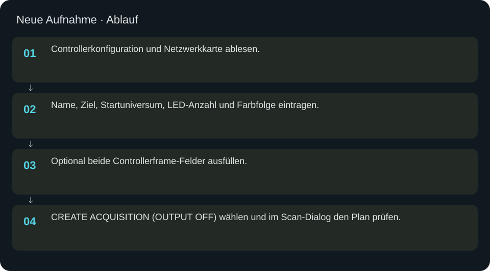
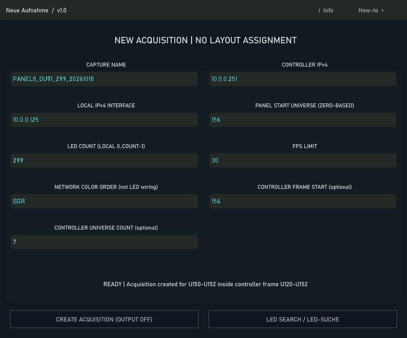

Neue Aufnahme
Eine Aufnahme mit originalen lokalen IDs und Routing vorbereiten; das Layout bleibt zunächst unverändert.
In welcher Reihenfolge?
- Controllerkonfiguration und Netzwerkkarte ablesen.
- Name, Ziel, Startuniversum, LED-Anzahl und Farbfolge eintragen.
- Optional beide Controllerframe-Felder ausfüllen.
- CREATE ACQUISITION (OUTPUT OFF) wählen und im Scan-Dialog den Plan prüfen.


Schritt für Schritt
Beispiel
Panel8_299, Anzahl 299. Die Zahlen 156 und 7 im Beispiel sind nur mit der dazu passenden Controllerkonfiguration gültig. Keine Universen aus anderen Panels übernehmen. Die Funktion erstellt die Aufnahmedefinition, startet weder Kamera noch Lichtausgabe und bindet noch kein Layoutobjekt.
Eingaben & Beispiele
| Feld | Bedeutung | Beispiel |
|---|---|---|
name | Eindeutiger Name der Aufnahme. | Panel8_299 |
target | IPv4 des Controllers. | 10.0.0.251 |
interface | Lokale Netzwerkkarte für Art-Net. | 10.0.0.125 |
universe | Startuniversum des Panels, ab 0. | 156 |
count | Adressierbare LED-Anzahl, lokale IDs 0 bis count−1. | 299 |
rate | Angeforderte Rate in FPS. | 30 |
order | Netzwerk-Farbfolge, nicht automatisch die physische LED-Verdrahtung. | RGB |
frame_start_universe | Optionaler Start des ganzen Controllerframes; zusammen mit Anzahl ausfüllen. | 156 |
frame_universe_count | Optional: gesamte Universenanzahl des Controllers; andere Ports werden schwarz gesendet. | 7 |
Numerische Eingaben verwenden einen Punkt als Dezimaltrennzeichen. IPs, Pfade, Quellstarts und Universen zuerst mit der tatsächlichen Installation vergleichen.
Woran erkenne ich Erfolg?
Die erwartete Ansicht öffnet, Status und Vorschau entsprechen der gewählten Aktion, und es erscheint kein Fehler. Änderungen beim nächsten Laden beziehungsweise im Live-Status erneut lesen. Ein erfolgreicher Bildschirmtest beweist weder physische LED-Ausgabe noch korrekte Kameramessung.
Quellennachweis
Dateipfade im Projekt-Repository; die Onlinehilfe gibt keinen allgemeinen Dateisystemzugriff frei.
pixelblaze_mapper/build_scan_session_ui.py
Dialog: /project1/guided_scan/new_capture_panel